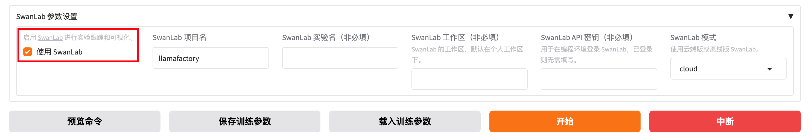
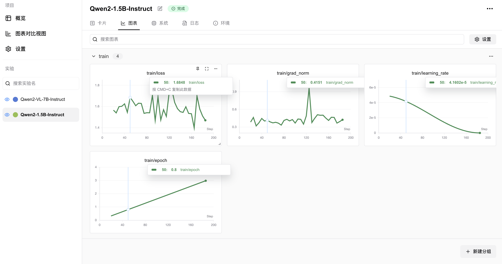
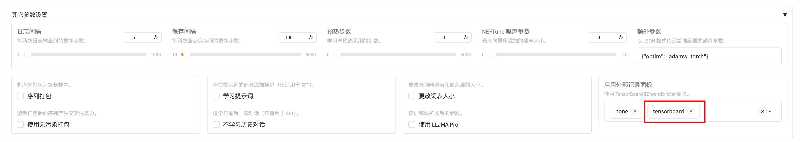
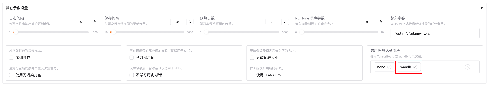
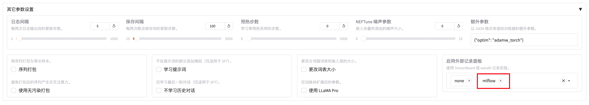

实验监控
LLaMA-Factory 支持多种训练可视化工具，包括：LlamaBoard 、 SwanLab、TensorBoard 、 Wandb 、 MLflow 。
LlamaBoard
LlamaBoard 是指 WebUI 中自带的Loss曲线看板，可以方便的查看训练过程中的Loss变化情况。
如果你想使用 LlamaBoard，只需使用 WebUI 启动训练即可。
SwanLab
SwanLab 是一个开源的训练跟踪与可视化工具，云端和离线均可使用，支持超参数记录、指标记录、多实验对比、硬件监控、实验环境记录等功能，可以有效地帮助开发者管理实验。
如果你想使用 SwanLab，请在启动训练时在训练配置文件中添加以下参数：
use_swanlab: true
swanlab_project: llamafactory
swanlab_run_name: test_run
或者，在WebUI的 SwanLab 模块中开启 SwanLab 记录：

可视化样例：

TensorBoard
TensorBoard 是 TensorFlow 开源的离线训练跟踪工具，可以用于记录与可视化训练过程。
如果你想使用 TensorBoard，请在启动训练时在训练配置文件中添加以下参数：
report_to: tensorboard
或者，在WebUI的 其他参数设置 模块中的 启用外部记录面板 中开启 TensorBoard 记录：

Wandb
Wandb（Weights and Biases）是一个云端的训练跟踪工具，可以用于记录与可视化训练过程。
如果你想使用 Wandb，请在启动训练时在训练配置文件中添加以下参数：
report_to: wandb
run_name: test_run
或者，在WebUI的 其他参数设置 模块中的 启用外部记录面板 中开启 Wandb 记录：

MLflow
MLflow 是Databricks开源的离线训练跟踪工具，用于记录与可视化训练过程。
如果你想使用 MLflow，请在启动训练时在训练配置文件中添加以下参数：
report_to: mlflow
或者，在WebUI的 其他参数设置 模块中的 启用外部记录面板 中开启 MLflow 记录：
